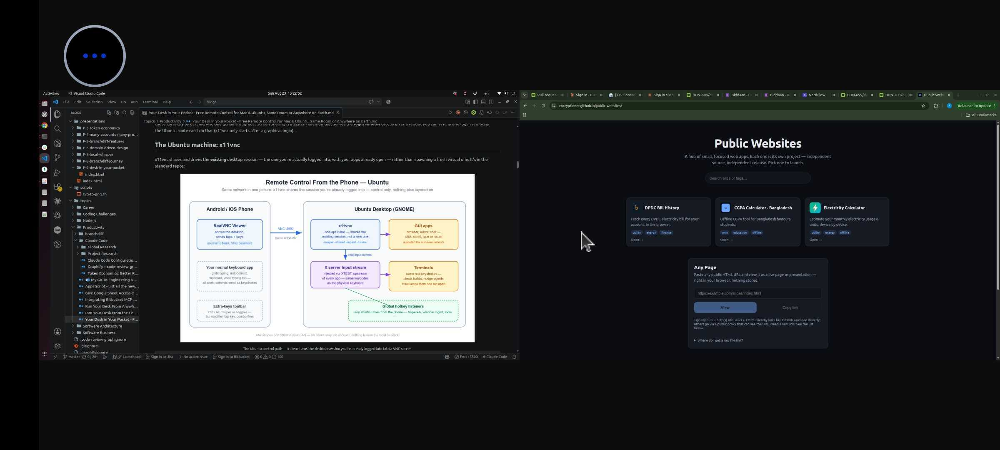

Deck 09 · the remote-control rig
Your desk, in your pocket.
Your phone becomes a real screen + keyboard + mouse for your Mac and Ubuntu box — on the home WiFi, or from a coffee shop three cities away. Built from what the OS already ships, one free app, and (only off the home network) one mesh VPN. $0, no cloud in the control path, no ports opened to the internet.
macOS Screen Sharing
x11vnc
RealVNC Viewer
Tailscale / WireGuard
verified live
02 · the itch
Why would you want this? Four moments.
Not a workstation replacement — occasional, light touches on real work, from wherever you already are.
🛋️ Mid-rest, an agent needs a nudge
Tap the phone, type "looks good, continue" — it lands as a real keypress in the real terminal.
🔨 A build is running upstairs
Glance at the mirrored terminal. No SSH session to remember, no monitoring app.
💬 A reply is worth sending now
Your normal phone keyboard — glide typing, autocorrect, clipboard — typing into Slack, email, a commit message.
✈️ Another city entirely
The same saved entry still reaches home, through an encrypted tunnel. Zero router ports opened.
2
servers, mostly pre-installed
1
phone app, both machines
1
mesh VPN — only off the LAN
03 · the route
Three parts. Each removes exactly one constraint.
Set up in order — everything after Part 1 builds on Part 1 and never rebuilds it.
📶
PART 1 · SAME NETWORK
Phone drives the desktop over home WiFi. Running today.
──►
🌍
PART 2 · THE INTERNET
Same rig from anywhere — a re-addressing, not a rebuild.
──►
⚙️
PART 3 · DEEP DIVE
What's on the wire — for when you want the why.
The one habit worth forming: one phone app — RealVNC Viewer — drives both machines. One saved entry per box (<ip>:5900), each with its own password. Two entries, one muscle memory.
04 · part 1 — why VNC
"Why not just SSH?" SSH can't do this job.
SSH — a parallel door into the basement
Drops you into a new text shell. Can't see the desktop you left running, can't click, can't type into open apps, can't fire shortcuts.
VNC — a mirror plus a hand
Phone sees your apps, exactly as left. Every tap and keystroke is injected as a real input event — indistinguishable from sitting at the keyboard.
the property everything rests onReal input events → every app and every hotkey listener responds. That's why a phone can fire Super+A or dictate a commit message — and why this rig is VNC-based, not SSH-based. (The gears, slide 18.)
05 · part 1 — the Mac
The Mac half: the server is already installed.
- System Settings → General → Sharing → Screen Sharing — on. Keep it plain Screen Sharing, not Remote Management (RM serves the login window and typing into it drops focus).
- ⓘ → "VNC viewers may control screen with password" — set that password. Without it, most phone clients fail to connect at all.
- Connect from the phone to <mac-ip>:5900 — the VNC password, username blank. (Tested live.)

The macOS control path — one toggle + a VNC password and every app responds as if you typed it. Click to zoom.
06 · part 1 — Ubuntu
The Ubuntu half: one package, one command.
$ sudo apt install -y x11vnc
# find the real display number first: who → "<user> :N <date>"
$ x11vnc -display :<N> -auth guess -usepw -shared -repeat -forever

The Ubuntu control path — x11vnc turns the session you're already logged into into the server. Click to zoom.
the two flags that bite-shared (default off): without it, one stale half-open connection blocks every reconnect. -repeat (default off): without it, held keys repeat never — one character per touch. Both earned by real failure.
07 · part 1 — the phone
The phone half: one app, no account.
RealVNC Viewer, free. Standardized on for one reason that beats any feature list: it speaks the classic VNC auth both servers serve — same app, same gestures, same saved list for the Mac and the Ubuntu box.

Verified live: a dual-monitor desktop, both screens in one session — swipe to pan between them, pinch to zoom. Same story on the Mac and Ubuntu. Click to zoom.
read this before signing inRealVNC the company sells a cloud ecosystem — accounts, device lists, "connect from anywhere". None of it is needed. The Viewer connects direct, machine-to-machine. Don't sign in; add an address, connect: <ip>:5900 + its VNC password.
08 · part 1 — first drive
First drive: it feels like sitting down.
The moment it clicks — you're on the couch, the desktop is upstairs, and neither of you notices the distance:
⌨️ The nudge
Terminal mirrored on the phone. You type "looks good, continue" — it lands as a real keypress in the real terminal, same as if you'd walked over.
👀 The glance
A build's mid-run upstairs? Pull up the phone, read the tail of the output, put it away. Nothing to reconnect, nothing to remember.
verified liveWindow switching, multi-key shortcuts, the full keyboard — all from the phone, exactly as from the desk. The next four slides are the technique that makes it fewer taps, every time.
09 · part 1 — gestures
Your fingers are the mouse: taps are clicks.
- One finger = left click. Two fingers at once = right-click. Three = middle click; double-tap-hold-drag = select text.
- Scroll = two-finger swipe — a real wheel event. Pages, lists, editors scroll natively on both OSes; terminal scrollback works out of the box.
- Modifier keys are toggles, not holds. A touchscreen can't chord. Tap Ctrl in the toolbar (stays armed) → tap the key → the combo fires and releases. Stack Ctrl, Shift, then the key.
- Switch apps via the hot corner first. Tap the top-left pixel (GNOME) or a macOS hot corner → window overview → tap. One tap, no modifier.
- Right-click-heavy session? Pair a Bluetooth mouse — its real right button just works. Gesture reference ↗. Same plays in bVNC; its right-click is hold + second-finger tap.
10 · part 1 — everyday moves
The moves you'll use every single day.
- Reopen a closed tab: arm Ctrl + Shift, tap T.
- Stop a runaway command: Ctrl toggle + c. Ctrl+C stops the program; Ctrl+D ends the shell — neither touches the VNC session.
- Fix a line without arrows: Ctrl+A / Ctrl+E start/end, Ctrl+W delete word — readline bindings work over VNC exactly like locally.
- Done? Just disconnect. The desktop keeps running; your session waits. Close a shell with exit when you actually mean it.
Switch terminals by keystroke — use the desktop's window overview (hot corner or Alt+Tab) instead of hunting window thumbnails.
11 · part 1 — personas
Same three mechanics, whoever you are.
Gestures, modifier toggles, the hot corner — everything above reduces to those three. What changes is what you do with them:
👩💻 if you live in terminalsThe dev
Ctrl+Shift+C/V to copy-paste in terminals (the Shift is the tell), Ctrl+R history search, ↑+Enter to rerun.
🧭 if you're browsing, not buildingThe explorer
Pinch = client-side zoom on dense pages, three-finger tap = middle-click paste, Esc kills dialogs.
🎬 if it's media and messagesEveryone else
Keyboard autofill fills desktop passwords, the emoji panel sends real keystrokes, Space plays and pauses.
12 · part 1 — cautions
Two cautions, both learned the annoying way.
caution 1 — autocorrectAutocorrect + terminals don't mix. It will "fix" flags, paths, and git subcommands — and keystrokes arrive already corrected, with no desktop-side guard to catch it. Disable it for the VNC app, or proofread before Enter.
caution 2 — the cursorVoice typing lands wherever the cursor is. Check the focused window before you speak — dictation commits instantly into whatever app owns the cursor.
One honesty note on voice: phone keyboards dictate through their maker's cloud speech service — free and zero-setup, but not offline. Know which way that cuts before dictating anything sensitive.
13 · part 1 — when it breaks
When it breaks: three symptoms cover most of it.
- Mac loops on "enter credentials" → answer the VNC door: password only, username blank — and the first 8 characters are the real password. (Why 8: slide 20.)
- Ubuntu says "connection refused" → nothing is listening: pgrep -af x11vnc, then re-run and read the output — usually the wrong display number.
- Worked yesterday, dead today → DHCP re-leased the LAN IP: hostname -I / ipconfig getifaddr en0, update the saved entry — or set a router reservation.
The full symptom → fix table — including the timeout-vs-refused tell and the Mac's three auth behaviors — lives in the post's Reference section.
Read it here ↗
the security line, in one breathKeep 5900 LAN-scoped, treat the VNC password as 8 characters effective, and never port-forward 5900 — needing in from outside is Part 2's job.
14 · part 2 — off the LAN
"Wait — this only works on my WiFi." Fixable. Not by port-forwarding.
The 2010 advice fails silently on a large share of modern connections. Five minutes tells you which side you're on:
# 1 — router admin panel: note its WAN IP
# 2 — ask the internet what IP your desktop is seen as
$ curl ifconfig.me
# 3 — compare: same → real public IP, forwarding possible
# different, or WAN IP inside 100.64.0.0/10
# → CGNAT: your ISP's shared NAT drops inbound, forever
CGNAT is standard now on many fiber and 5G connections — your router's "public" side is itself private, inside the ISP's NAT layer. Everything on your side can be perfect and the packets still never arrive.
And even with a clean check — don't, not raw VNC: classic VNC auth is a single shared 8-character password, and a correct guess drives your desktop. The real goal: put phone and desktop on one private network, wherever both physically are.
15 · part 2 — the mesh VPN
Tailscale: your private network that follows the devices.
A mesh VPN built on WireGuard encryption. Install it, log in once — every device gets a permanent private 100.x.y.z address (the "tailnet") that never changes when the device moves. The phone just dials that instead of the LAN IP.

Part 2 in one picture — a networking-layer swap; the rig's software never learns a VPN exists. Click to zoom.
What actually changes: the address the phone dials (LAN IP → tailnet IP), one ufw rule (100.64.0.0/10 instead of your subnet), and two small installs. x11vnc, Screen Sharing, the port, the password, the app — all unchanged. A re-addressing, not a rebuild.
16 · part 2 — trust
"Can I trust some company's VPN?" Here's the case.
the cryptoWireGuard's, not home-rolled
Formally verified primitives, end-to-end between your two devices only. The coordination server exchanges public keys — relays carry ciphertext by construction.
the codeData-touching parts are open
Every client and even the relay code are on GitHub. The closed piece — coordination — sees metadata, never payloads.
the exitAudited, and exit-able
Recurring third-party audits, millions of daily users. If the trade-off ever stops being acceptable: Headscale, a self-hosted control plane, same clients.
E2E
encryption device-to-device
17 · part 2 — the receipts
Not a diagram — a live session.
mobile data
WiFi off, live session
direct
WireGuard path — no relay
verified from cellularScreen updated, taps and keystrokes landed, every Part 1 skill carried over — on a carrier network. Verify the interaction, not the connection: connect, hit the hot corner, open a terminal, type a line, fire a Ctrl+key combo. Anything stuttery → tailscale status will say relay — that's transport, not the rig.
The Mac's route ran live too — through the DERP relay, the encrypted fallback (~125 ms, fully usable VNC): the one carrier round where no direct path was punchable. Honest edge: the escape hatches (SSH reverse tunnel, Headscale, Cloudflare Tunnel) remain untested on this rig.
18 · part 3 — hotkeys
The deep dive's best trick: why shortcuts fire.

XTEST — the X11 extension built for test automation, injecting at the server level, upstream of every app. Click to zoom.
- VNC keystrokes enter the X server's input stream — dispatched exactly like the physical keyboard's: same keycodes, same grabs, same hotkey listeners.
- So terminals, the window manager, and every launcher see a real key event — Super-shaped shortcuts included, all from the phone.
- SSH bytes go to one process's stdin — nothing about them is a keyboard event as far as the OS is concerned.
19 · part 3 — finding each other
Your phone and your desktop sit behind two different firewalls. How do they meet?

The rendezvous trick: both sides send at each other simultaneously — each outbound packet opens a pinhole in its own firewall. Click to zoom.
the envelopeWireGuard
Each device pair shares keys; traffic is a sealed UDP envelope no relay can open.
the usual outcomeDirect path
Coordination tells each side the other's address; the simultaneous handshake connects them directly.
the fallbackDERP relay
When no direct path is punchable: encrypted packets relayed through Tailscale's servers. Slower by a hop, still ciphertext — a post office, not a listener.
20 · part 3 — the protocol
RFB — the conversation every VNC session opens with.

RFC 6143 — step 3 is where the 8-character cap lives. Click to zoom.
why 8 characters, mechanicallyClassic VNC auth is a DES challenge-response: the server sends a challenge; the client encrypts it with DES using the password itself as the key — and DES keys are 8 bytes. Whatever you type past character 8 never enters the computation. Every classic-auth implementation inherits it — macOS and x11vnc alike. Not a bug: the protocol wearing its age on its sleeve.
21 · after setup — the daily loop
After the weekend: nothing to type.
The VPN runs as a service, the servers autostart, the firewall rule persists across reboots. What's left in a normal week:
start · only if you unloaded itMac server on
sudo launchctl load -w …/screensharing.plist → confirm with the port check. Phone: VPN toggle → saved entry.
check · ten secondsMe or the rig?
tailscale status — online? direct or relay? Then nc -vz <ip> 5900: refused = server off · timeout = path · succeeded = go.
stop · done for the dayClose things down
Phone: disconnect, VPN off (battery). Mac: the matching unload — one line each direction, both survive reboots.
Ubuntu has no daily anything — server, VPN, and firewall all persist on their own. The Mac's launchctl pair is the only on/off in the whole internet rig.
22 · the bill
What it actually costs: see for yourself.
2
OSes, served by built-ins
- No subscription — free tiers throughout, nothing expires.
- No cloud in the control path — connections are direct device-to-device, encrypted with your own keys.
- No ports opened to the internet — the firewall rules only ever narrow.
- Honest edges — escape hatches untested; relay rounds are usable but laggier (~125 ms).
23 · where this landed
Where this landed: a full second seat at the desk.
- Mac, on the LAN: RealVNC Viewer end to end — window switching, multi-key shortcuts, voice typing — through reboots and IP re-leases.
- Ubuntu, on the LAN: same standard handshake against x11vnc — one app, two entries.
- Off the LAN, direct: phone on mobile data, ~66 ms, every Part 1 skill carried over unchanged.
- Off the LAN, relayed: the Mac driven over the DERP fallback — observed live, not just diagrammed.
- Deliberately small: 2 servers you mostly already have + 1 phone app + 1 mesh VPN only off the LAN.
24 · build it
The couch is a valid place to get something done. So is another city.
Part 1 alone takes an evening and works on your home network today. The internet comes along later as one small install.